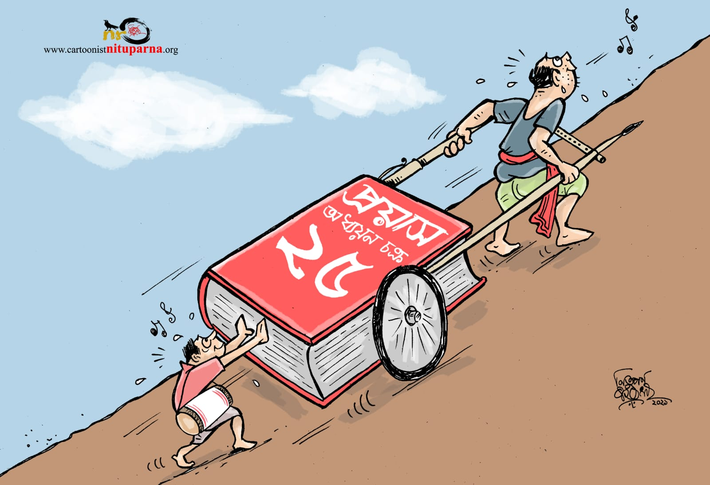
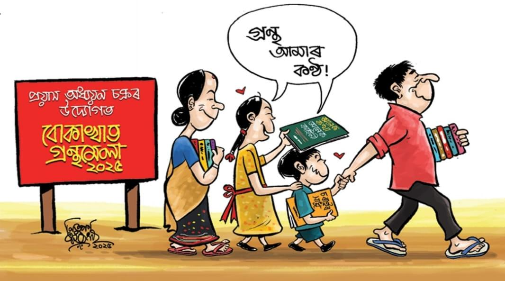

Bokakhat Jatiya Bidyalay
PACB's flagship school, offering academic streams, modern labs, residential support, and a strong co-curricular program.
Founded in 1996 in Bokakhat, Assam
Prayas Adhyayan Chakra (প্ৰয়াস অধ্যয়ন চক্ৰ, PACB henceforth) is a non-profit, non-governmental organization founded in 1996 in Bokakhat, Assam. Guided by the constitutional values of equality, justice, and fraternity, PACB works to create an equitable society through education and cultural preservation, particularly focusing on marginalized communities.



PACB began as a grassroots study circle serving rural areas around Bokakhat, addressing the educational needs of economically disadvantaged children.
PACB is deeply committed to preserving and promoting the languages and cultures of Assam's diverse communities, with particular attention to those historically marginalized and discriminated against.
Through our network of educational and cultural institutions, we work to build communities that prioritize improving their socio-economic conditions while celebrating their unique cultural heritage.
Our efforts consistently highlight the works of regional writers and artists, fostering dialogue around progressive literature and cultural expression. We believe that by combining quality education with cultural and political consciousness, we can empower communities to shape a more just and equitable future.
PACB began as a grassroots study circle serving rural areas around Bokakhat, addressing the educational needs of economically disadvantaged children.
PACB began as a grassroots study circle serving rural areas around Bokakhat, addressing the educational needs of economically disadvantaged children.
Early initiatives included awareness campaigns encouraging students to pursue formal education and textbook distribution drives for families unable to afford educational materials.
A significant milestone came with the establishment of Bokakhat Jatiya Vidyalay, which has since grown into a network of four schools.
These institutions specifically serve impoverished communities in remote and riverine areas, implementing scientific and evidence-based educational practices designed to foster holistic student development.
Established in 2005 near the Agaratoli range of Kaziranga National Park, Bokakhat Jatiya Bidyalay provides education from pre-primary through Class XII. Students can pursue Science, Humanities, and Commerce after matriculation.
The school serves 580 students with 32 teachers and includes a science laboratory, computer lab, residential facilities, and co-curricular learning in Satriya dance, music, visual arts, and violin.
Students have excelled in the National Children's Science Congress and other state and national competitions, with graduates entering institutions such as NLUJA, EFLU, IISER, Cotton University, and Guwahati Medical College.
PACB's schools serve children across Bokakhat, Mohuramukh, Rongagora, and Uportemera-Joraguri, with special focus on remote and riverine communities.
PACB's flagship school, offering academic streams, modern labs, residential support, and a strong co-curricular program.
Founded to address the educational requirements of the Mohuramukh region with dedicated teaching and community-focused schooling.
Located along the banks of the Dhansiri River in Rongagora, the school delivers comprehensive education to the local community.
PACB highlights regional writers and artists, creating dialogue around progressive literature, cultural expression, and community self-confidence.